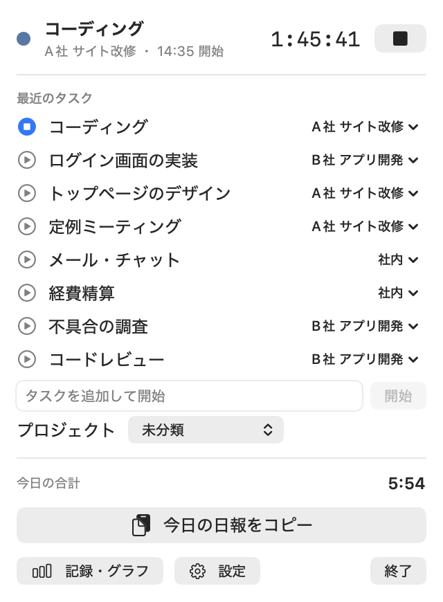
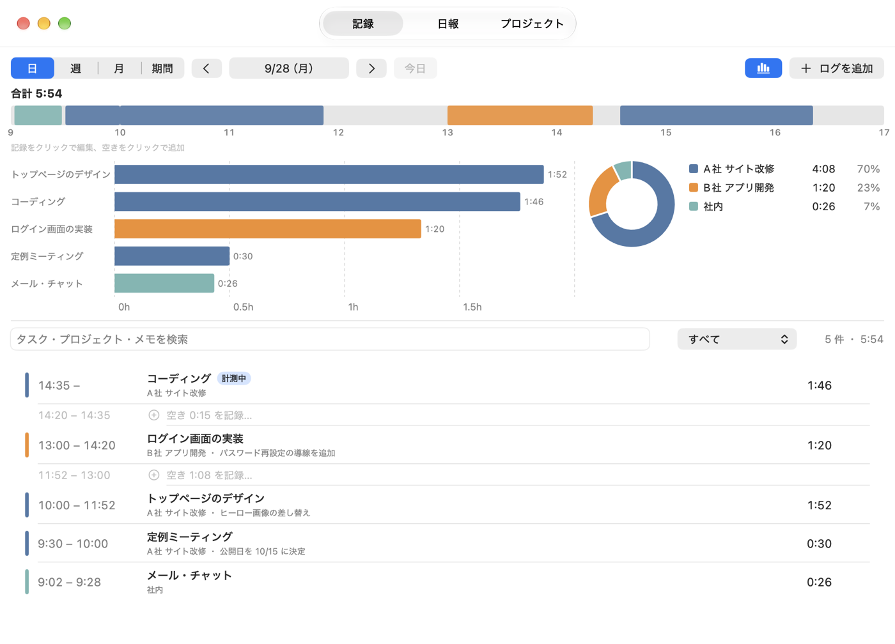
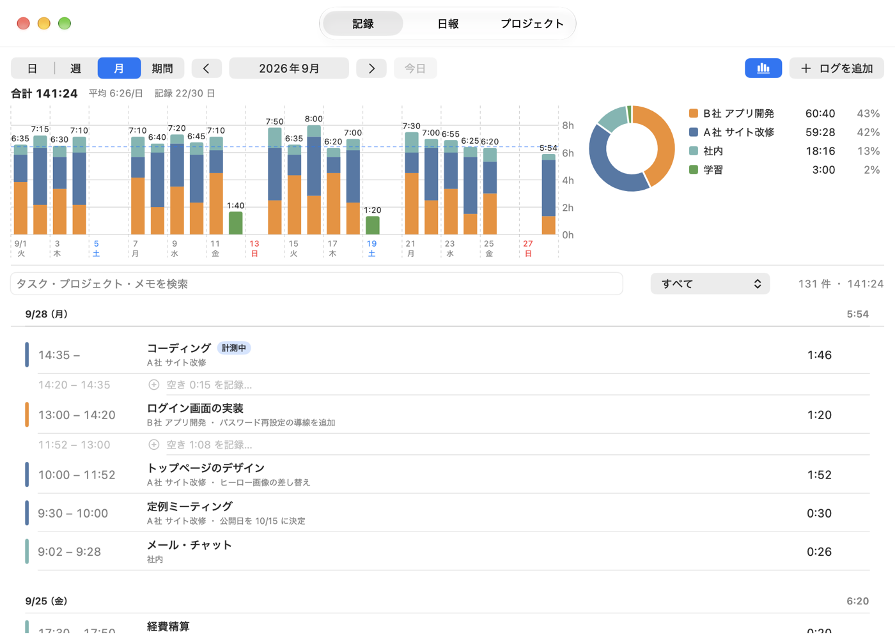
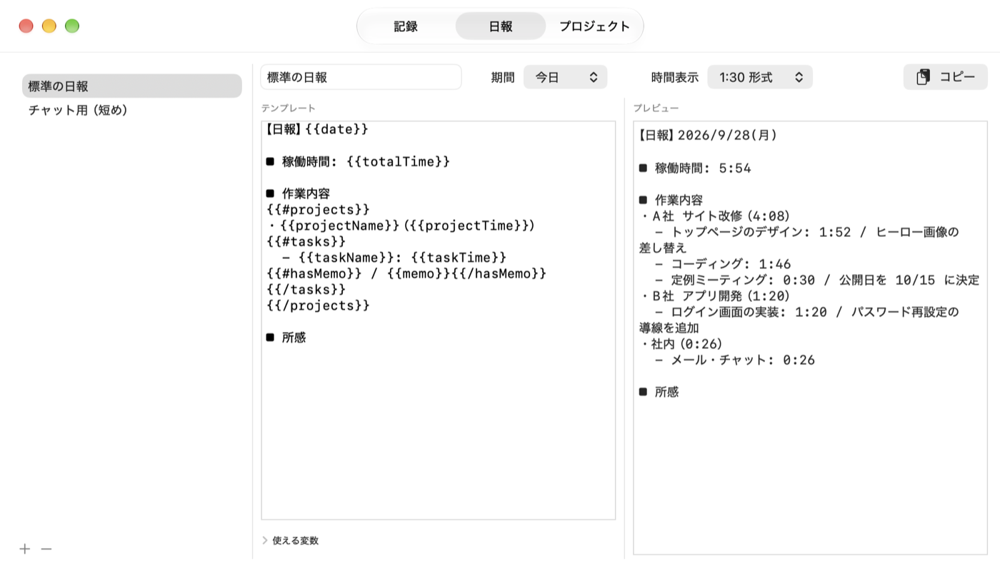

Hibiori の使い方
日々が、織りあがる。
Hibiori は、タスクを選んで計測を始めるだけで、その日の記録・グラフ・日報ができあがるアプリです。ここでは、ふだん使う操作を順に紹介します。
1. 計測を始める・止める
Hibiori は Dock には出ず、画面右上のメニューバーだけに出ます。メニューバーのアイコンをクリックすると、次のパネルが開きます。

- はじめて使うとき：「タスクを追加して開始」の欄に作業の名前を入れて、⏎ か「開始」を押します。その下でプロジェクトも選べます（あとから変えられます）。
- 次からは：「最近のタスク」の ▶ を押すだけで始まります。
- 別の作業に移るとき：別のタスクの ▶ を押すと、今の計測を終えて新しい計測に切り替わります。止めてから始め直す必要はありません。
- 止めるとき：上の ■ か、計測中のタスクの行を押します。
計測中は、メニューバーに経過時間が出ます。1 分に 1 度、数秒だけタスク名に切り替わります。
タスク名の右にあるプロジェクト名を押すと、そのタスクのプロジェクトを変えられます。このとき、そのタスクの過去の記録もすべて新しいプロジェクトに移ります。
2. キーボードから操作する
どのアプリを使っていても、次のキーで Hibiori を呼べます。
- ⌃⌥⌘Space：タスクを検索して開始する小さな窓を開きます。名前の一部を打って ⏎ で開始。まだ無い名前を打てば、その場で作って開始します。
- ⌃⌥⌘T：計測の開始と停止。止まっているときは、最後に使ったタスクで始めます。
- ⌃⌥⌘R：今日の日報をコピーします。
キーは設定の「ショートカット」で変えられます（8. 設定）。
3. プロジェクトでまとめる
タスクはプロジェクト（案件・顧客・分野など）でまとめられます。グラフや日報はプロジェクトごとに集計されます。
- パネル下の「記録・グラフ」を押してウィンドウを開き、「プロジェクト」タブを選びます。
- 「新しいプロジェクト名」に名前を入れて「プロジェクトを追加」を押します。
- プロジェクトの下の「タスクを追加」欄から、タスクを作れます。左の色の丸を押すと、グラフに使う色を変えられます。
使わなくなったプロジェクトやタスクは、右の ⋯ から「アーカイブ」します。一覧から消えるだけで、過去の記録と集計はそのまま残ります。「完全に削除」をしても、記録は「未分類」として残ります。
4. 記録を見る・直す
ウィンドウの「記録」タブで、これまでの記録を見られます。上の「日・週・月・期間」で表示する範囲を選び、‹ › で前後に動かします。

- 直す：一覧の行をダブルクリックするか、行にマウスを乗せて出る ⋯ から「編集…」を選びます。開始・終了の時刻、タスク、メモを直せます。日表示のタイムラインで記録を押しても開きます。
- 付け忘れを足す：一覧の「空き 〇〇 を記録…」か、タイムラインの灰色の部分を押すと、その時間を埋める記録を足せます。右上の「ログを追加」からも足せます。
- 分ける・まとめる：⋯ の「分割・結合…」で、1 件を途中で 2 件に分けたり、続いている同じタスクの記録を 1 件にまとめたりできます。
- 消す：⋯ の「削除…」で消せます。間違えて消したときは、アプリを終了するまでは一覧に出る「削除を取り消す」で戻せます。
上の検索欄とプロジェクトの選択で、一覧を絞り込めます。時間が重なった記録があると「重複 〇 件」と出るので、押すとその記録だけを表示します。
5. グラフで振り返る
「記録」タブの上半分がグラフです。1 日の表示ではタスク別、週・月・期間では日ごとの積み上げになり、右にプロジェクトの割合が出ます。右上の棒グラフのボタンで、グラフを隠して一覧だけにもできます。

- 日ごとの棒を押すと、その日の表示に移ります。
- 右のプロジェクトを押すと、下の一覧をそのプロジェクトだけに絞り込みます。
- 「期間」を選ぶと、過去 7 日・30 日・90 日や、好きな日付の範囲で見られます。
6. 日報をコピーする
パネルの「今日の日報をコピー」を押すと、今日の記録を文章にしてクリップボードに入れます。あとはチャットやメールに貼り付けるだけです。
文面はウィンドウの「日報」タブで変えられます。

- 左の一覧からテンプレートを選ぶと、右にプレビューが出ます。最初から「標準の日報」と「チャット用（短め）」が入っています。
- 中央の欄で文面を直せます。
{{totalTime}}のような{{ }}の部分に、合計時間やタスク名が入ります。何が使えるかは、欄の下の「使える変数」を開くと分かります。 - パネルのボタンやショートカットでコピーされるのは、「既定」にしたテンプレートです。テンプレートを右クリックして「既定にする」を選ぶと、名前の横に ★ が付きます。
- 上の「期間」で、今日以外の日や今週の分も作れます。
7. 止め忘れたとき
Hibiori は計測を勝手には止めません。そのかわり、次のようにお知らせします。
- 長く計測しているとき：設定した時間を超えると通知が届きます。通知から「停止」か「計測を続ける」を選べます。
- スリープ・画面ロック・再起動をまたいだとき：次にパネルを開くと確認が出ます。「〇〇:〇〇 で終了」（離れた時刻）、「計測を続ける」、「破棄」から選びます。
あとで気づいたときは、記録の編集で終了時刻を直せば大丈夫です。
8. 設定しておくと便利なこと
パネル下の「設定」から開きます。
- 起動：「ログイン時に起動する」をオンにすると、Mac を起動したときから使えます。
- 一般 › 1日の開始時刻：夜中の作業を前の日の分として数えたいときに使います（はじめは 4:00）。
- 一般 › 時間の表示形式：1:30 / 1.5h / 90分 から選べます。
- タイマー：長時間の通知を出すまでの時間や、スリープから戻ったときに確認する条件を変えられます。
- ショートカット：欄をクリックしてから、使いたいキーを押します。⌫ で無効に、⎋ で取り消し。ほかのアプリが使っているキーは登録できず、その場で知らせます。
- データ：すべての記録を CSV / JSON に書き出せます。書き出したファイルの読み込みもここからです。1 日 1 回の自動バックアップもここで確かめられます。
9. ショートカット一覧
どのアプリからでも
| ⌃⌥⌘Space | タスクを検索して開始 |
| ⌃⌥⌘T | 計測の開始／停止 |
| ⌃⌥⌘R | 今日の日報をコピー |
「計測を停止」「直前のタスクを再開」「記録・グラフを開く」「メニューバーを開く」にも、設定でキーを割り当てられます。
タスクの検索窓の中
| ↑ ↓ | 候補を選ぶ |
| ⏎ | 選んだタスクで開始（新しい名前なら作って開始） |
| ⌘1〜⌘9 | その番号のタスクで開始 |
| ⌘. | 計測を停止 |
| ⎋ | 閉じる |
記録のウィンドウ
| ⌘1 / ⌘2 / ⌘3 | 記録 / 日報 / プロジェクト |
| ⌘N | 記録を追加 |
| ⌘E（または ⏎） | 選んだ記録を編集 |
| ⌘⌫（または ⌫） | 選んだ記録を削除 |
| ⌥⌘← / ⌥⌘→ | 前の日・週・月へ／次へ |
| ⌥⌘T | 今日を含む期間に戻る |
分からないことがあれば、サポートページのよくある質問もご覧ください。